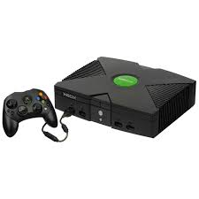

A Microsoft criou o Xbox, o seu 1° video game. Ele nasceu em 2001, justamente para competir com o PS2 e nintendo cube(n sei como escrevekk)
 Gift Cards XboxVocê pode comprar Online no site da MICROSOFT, em Farmacias, ou em algum(a) loja que venda os cartões(GIFT CARDS)Sites da Microsoft, sobre o Gift Card.
A Sony em parceria com a nintendo, fez seu "1° Video game" em
1986, segundo o google.
Essa Parceria, não deu muito certo como podemos dizer, então essas duas
empresas se separam, e em 1994 nasceu seu video game oficial.O Playstation(PS1)
Naquela época, os graficos dos video games eram MAGNIFICOS! Pois estavam apresentando uma nova tecnologia, os graficos 3D'
Os graficos 3D, era como se fosse algo mais real, bonito e elegante! Os jogos pareciam que estavam... SAINDO DA TV
E todos ficavam surpresos com essa nova tecnologia.
E esses graficos 3D, era mais ou menos isso daqui: